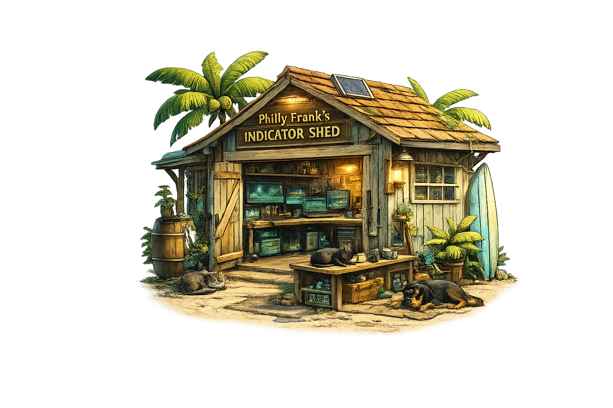

NQBot LIVE
A multi-agent AI market observatory for futures markets.
Open source • No trade signals • Educational research
Open source • No trade signals • Educational research

Check if Live ↗
No live stream right now. When you go live, this panel is where we’ll embed it.
If you ever want the live embed back, we’ll add it with a “Show Live Player” toggle so it never looks broken when you’re offline.
Philly Frank’s Indicator Shed
Free, open-source NinjaTrader 8 indicators — built DIY, shared openly, improved in public.

Everything here is educational tooling. Verify market hours/holidays and test indicators before live use.